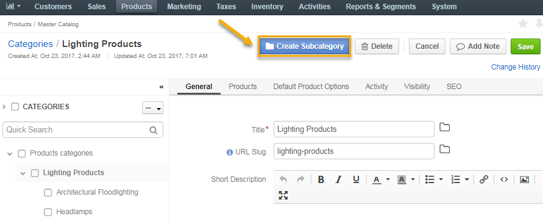

This topic contains the following sections:
Master catalog is a tree structure that organises all the products of your store under corresponding categories. A category combines the products of the same type into groups and helps enforce the unified selling strategy by configuring a special set of product options, visibility, and SEO settings that best fit the resulting product family.
Once the categories are in place, you can:
To view the Master Catalog, navigate to Products > Master Catalog in the main menu. The following page displays all the categories created under this catalog.
By default, there is only one Master Catalog in the OroCommerce application. To customize this catalog, you can add or delete a category, creating a group of products and linking it to the corresponding web catalog.
To create a master catalog category:
Navigate to Products > Master Catalog.
Click Create Category.
The following page opens:
In the General section, provide the following information:
In the Products section, select the items for the category you are creating. Use available filters to narrow down your search and speed up the selection of the necessary product items.
In the Default Product Options section, configure the following settings:
| Field | Description |
|---|---|
| Unit Of Quantity | A product unit that is shown by default in the product details page in the front store. Available options are each, hour, item, kilogram, piece, set, and Parent Category. The latter is used to refer to the same product quantity unit configured for the corresponding parent category. |
| Precision | An acceptable value (number of digits after the decimal point) for the quantity that a user may order or add into the shopping list. Items and sets are usually whole numbers, and units like kilograms may get precision of 2 to allow buying a custom volume (e.g. 0.5 kg). |
Field Description Inventory Status This setting enables you to define and modify status information for the stock of the product. Managed Inventory This setting defines the method for inventory management.
With Use category defaults, the product’s Manage Inventory inherits the setting selected for the product’s parent category. With Use system config, the product uses the system configuration setting.
Selecting Yes enables interactive updates based on the product inventory information from the Inventory > Warehouses section. Selecting No disables connection to the inventory, and uses the static Inventory Status value.
Highlight Low Inventory This option defines if low inventory for products is displayed in the front store. Inventory Threshold A minimum quantity of the product that is treated as In stock. When a product quantity drops below this value, the product inventory status becomes Out Of Stock. Low Inventory Threshold The minimum stock level defined for the product. Reaching the defined level will trigger a warning message to the buyer in the front store. Backorders A flag that indicates whether OroCommerce accepts backorders. When set to Yes, buyers and sales people can order products in the quantities that are not currently available in the warehouses. The remaining portion of the order will be sustained until the product gets back in stock. Decrement Inventory A flag that indicates whether OroCommerce decrements inventory upon order.
When both Decrement Inventory and Backorders are enabled, a product quantity may become negative.Minimum Quantity to Order A minimum quantity that a buyer or sales person can claim in the RFQ, customer order, quote, or a shopping list. Maximum Quantity to Order A maximum quantity that a buyer or sales person can claim in the RFQ, customer order, quote, or a shopping list. Is Upcoming This option informs a customer that the product of the selected category is not in stock currently, but will be available later. When set to Yes, additional Availability Date displays. Availability Date The date which indicates the exact date and time since when the selected product will be available in stock.
The Activity section displays all the activities available for the selected category, such as call, task, email, note, or calendar event. You can use filters to select any activity type and a date of its implementation.
In the Visibility section, you can set a visibility restriction for the category.
To make OroCommerce show or hide the master catalog category for a particular customer or customer group, create a visibility restriction by clicking the corresponding tab and selecting one of the following options:
In the SEO section, fill in the following details to help search engines show your master catalog content to the relevant audience.
Click the Translations icon to provide spelling for different languages. Click the Default Language icon to return to the single-language view.
Click Save on the top right.
Note
You can drag the created category to a different position within the content tree on the left of the page, as illustrated below:
Once you are done creating the main master catalog category, proceed to its subcategory creation.
To distribute the product items into more specific and detailed product families, create a master catalog subcategory:
Select a category to link a new subcategory to.
Click Create Subcategory.
Provide the information following the guide in the Create a Master Catalog Category section.
Note
Please note that one product item cannot be linked to both a category and a subcategory.
By default, all categories are visible. However, an administrator can control the default visibility settings (e.g. visible or hidden) for products and product categories for customer users.
To change the default product and category visibility settings:
Note
For faster navigation between the configuration menu sections, use Quick Search.
The following page opens:
To customize any of the options:
- Clear the Use Default box next to the option.
- Select the updated setting (e.g. visible or hidden).
Click Save.
Now, when the master catalog category is created, you need to link it to a web catalog for the customer to view it from the front store.
Proceed with the following steps: